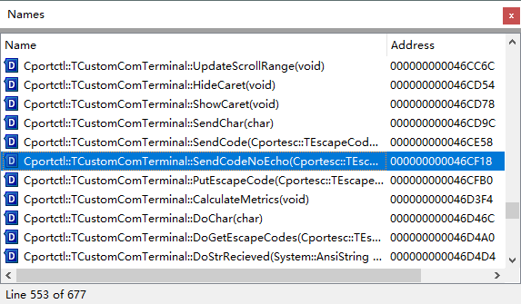
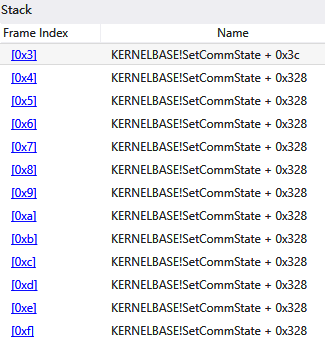
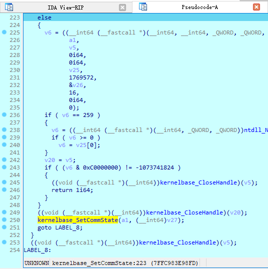

- Is the problem caused by sscom?
- Narrow down the problem
- Dive into
SetCommState() - Conclusion
- Workaround
For those (including myself) working on embedding systems, COM port is used day to day. sscom is a cute tool used widely. It’s small sized, fast, and reliable.
Unfortunately, something strange happened when sscom is used:
- pyserial will crash
- My KissUART will also hang and crash
- When using Web Serial API in Edge, the whole browser will hang too.
Now, let’s find it out.
Is the problem caused by sscom?
Icon of sscom tells us that it is built with an elder version of C++ Builder. Its size then tells us that it has been compressed by packer like upx.
Actually it is packed by ASPack. A quick search convinced me not to try to unpack it. Instead, we could load it into IDA Freeware. From the Names sub-view, we were sure that sscom is using ComPort-Library:

The problem seems probably not caused by sscom.
Narrow down the problem
Now I can reproduce the problem with 100% probability:
- Connect a J-Link probe;
- Open the CDC serial port of the probe in sscom;
- Close the serial port;
- Open the port in one of below tools and it will panic (while sscom would not):
- KissUART
- pyserial
- Edge
- and even the
modecommand
- Reconnect the probe, and then the port can be opened in either KissUART, pyserial, or Edge, again.
There are quite some printf(s) in [KissUART]. Enable them, and use it to open a newly connected probe and one accessed by sscom. Two values look strange:
XonLim = 25000
XoffLim = 25000
What do these values mean?
KissUART would not use flow-control, and these values are got them from GetCommState().
Modify several configurations, and feed the DCB back to SetCommState(). It
is a best practice, isn’t it?
Why sscom always works? It does not use GetCommState(), and each field of DCB
is filled before feeding to SetCommState(), where XonLim and XoffLim are both
set to input buffer size divided by 4.
Dive into SetCommState()
Use WinDbg to load KissUART and let it go. After a while, WinDbg
notifies us that a stack overflow has occurred. The stack window clears showing that
SetCommState() is recursively calling itself.

This is truly weird. Let’s see what is going on in SetCommState(). Use IDA to
debug KissUART, placing a breakpoint at SetCommState(). After running into
this API, de-compile it, and YES, it is recursive:

I assume that a super simplified version of SetCommState() looks like this:
BOOL SetCommState(HANDLE hFile, LPDCB lpDCB)
{
DCB old;
if (!GetCommState(hFile, &old))
return FALSE;
if (!NtDeviceIoControlFile(hFile, lpDCB, ...))
{
// let's "restore" its state
return SetCommState(hFile, &old);
}
return TRUE;
}
Conclusion
It’s the fault of SetCommState(), which should not be recursive. I think it
could have been implemented like this:
BOOL SetCommState0(HANDLE hFile, LPDCB lpDCB)
{
// NtDeviceIoControlFile
// ...
}
BOOL SetCommState(HANDLE hFile, LPDCB lpDCB)
{
DCB old;
if (!GetCommState(hFile, &old)) return FALSE;
if (!SetCommState0(hFile, lpDCB))
{
// let's "restore" its state
return SetCommState0(hFile, &old);
}
return TRUE;
}
Workaround
Before MS delivers an update for this API, we can make our own workaround:
-
Stop assuming that
SetCommState()will succeed withDCBread fromGetCommState; -
Always call
SetupComm()and setXonLim/XoffLimaccordingly before callingSetCommState()just as ComPort-Library.